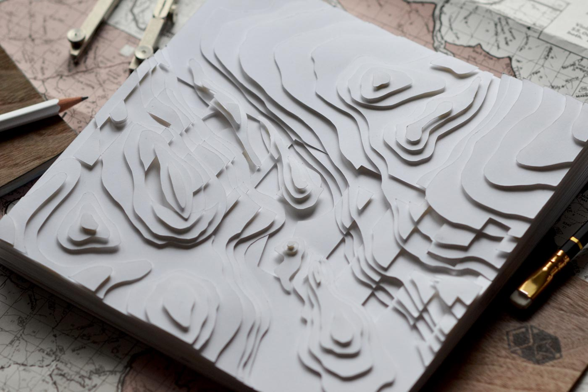

Typography, Handlettering, Made & Crafted, Applied Arts Feature
Forth is an exploration of typography in relation to line, form, light and shadow. It is a map lacking in directions, orientation or landmarks. It urges onlookers to explore and become lost in the ridges and folds of the world. As with any journey, there is always more to discover. Forth is an ongoing experiment and new pages will be updated from time to time.
Featured in the Applied Arts 2014 Student Awards.

Topographic maps were a major inspiration for the cover. Making the topography rise into three dimensional space was a particularly fun challenge but it gave the piece a wonderful tactile feel.Sedums and snowManipulation of light and shadowA ship is safe in harbor, but that’s not what ships are for. — William G.T. SheddHand-poked type.Every time you look up at the stars, it’s like opening a door. You could be anyone, anywhere. You could be yourself at any moment in your life. You open that door and you realize you’re the same person under the same stars. Camping out in the backyard with your best friend, eleven years old. Sixteen, driving alone, stopping at the edge of the city, looking up at the same stars... Out here where the world begins and ends, it’s like nothing ever stops happening. — Bryan Lee O'Malley